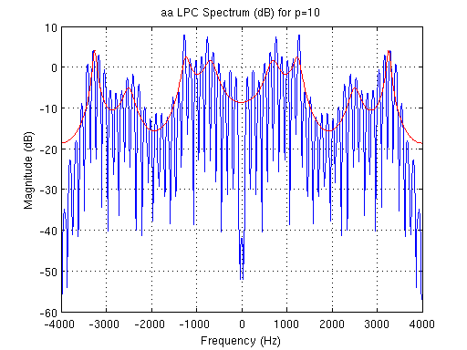
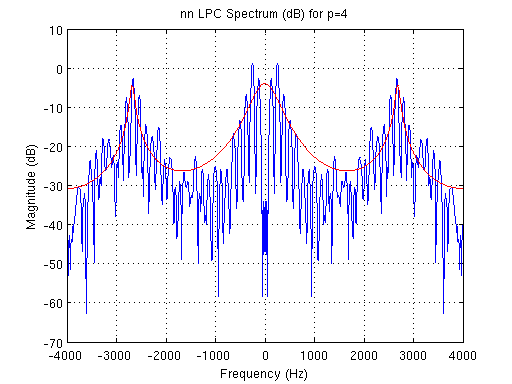
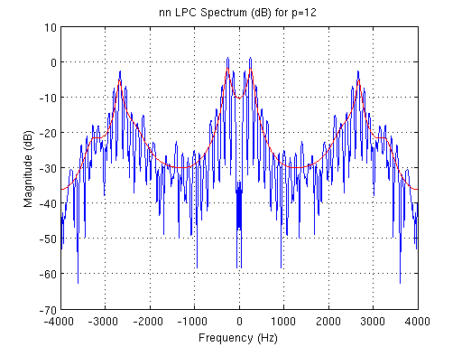
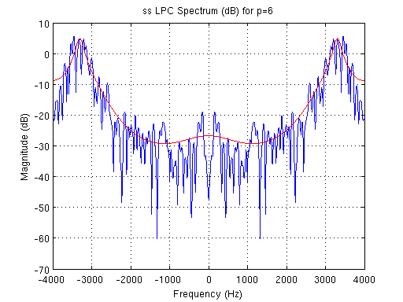
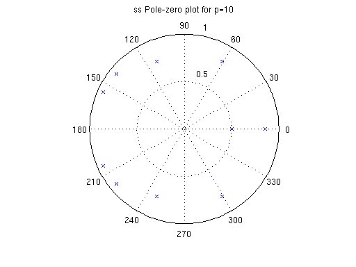
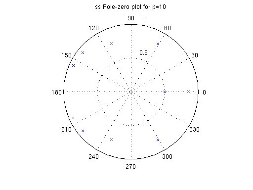
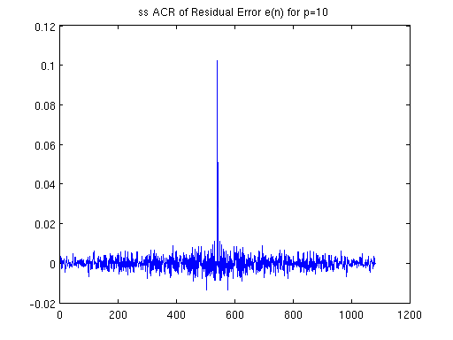

Contents
clear all close all clc %-----ANKIT AGRAWAL %-----10D070027 sounds = ['aa', 'nn', 'ee', 'ss']; for index = 1:4
sound = sounds(2*index-1:2*index);
Speech signal
%Preparing the initial parameters [x fs] = wavread(strcat(sound, '.wav')); x = x'; window_len = 0.03*fs; n = 0:window_len-1; hw = 0.54-0.46*cos(2*pi*n/(window_len-1)); figure(1) subplot(211) plot(x) grid on title(strcat(sound, ' Speech signal')) subplot(212) plot(hw) title('Hamming Window of length 240')
Windowed Signal
Windowed_signal = x(100:100+window_len-1).*hw;
spectrum = fft(Windowed_signal,1024);
freq_axis = (fs/1024).*(0:511);
time_axis = 1000*[0:(1/fs):239/fs];
figure(2)
subplot(211)
plot(time_axis, Windowed_signal)
grid on
title(strcat(sound, ' Windowed Signal'))
xlabel('Time (ms)')
subplot(212)
plot(freq_axis, 20*log10(abs(spectrum(1:512))))
grid on
title(strcat(sound, ' STFT without Pre-emphasis'))
xlabel('Frequency (Hz)')

Pre-Emphasized Windowed Signal
b = 0.95;
x_pe = zeros(1, length(x));
x_pe(1) = x(1);
for n = 2:length(x)
x_pe(n) = x(n) - b*x(n-1);
end
Windowed_signal_preemp = x_pe(100:100+window_len-1).*hw;
spectrum_preemp = fft(Windowed_signal_preemp,1024);
figure(3)
subplot(211)
plot(time_axis, Windowed_signal_preemp)
grid on
title(strcat(sound, ' Preemphasized Windowed Signal'));
xlabel('Time (ms)');
grid on;
subplot(212)
plot(freq_axis, 20*log10(abs(spectrum_preemp(1:512))))
grid on
title(strcat(sound, ' STFT of Preemphasized Windowed Signal'));
xlabel('Frequency (Hz)');
grid on;
Autocorrelation coefficients
% Set of pole values p_array = [4 6 8 10 12 20]; for c = 1:6
p = p_array(c);
r = zeros(1,p+1);
for k = 1:(p+1)
acr_sum = 0;
for g = 1:(window_len-k+1)
%acr_sum = Windowed_signal(g).*Windowed_signal(g+k-1) + acr_sum;
acr_sum = Windowed_signal_preemp(g).*Windowed_signal_preemp(g+k-1) + acr_sum;
end
r(k) = acr_sum;
end
Calculating LPC Coefficients and the corresponding Spectrum
For all the sounds, the estimated spectrum fits better as the number of poles in the model increases. The all-pole model although originally derived for vowels, works impressively well for the nasal consant /n/ and the fricative /s/ as can be observed, especially for the higher orders of estimation. Another point discussed in the class that can be observed is that the actual spectrum has lesser part above the estimated spectrum and a greater part below the estimated spectrum.
[A, EE, K] = levinson(r, p);
f_axis = -4000:4000/512:4000 - 4000/512;
Residual_error_energy(c) = EE;
A_z = sqrt(EE)./(fftshift(fft(A,1024)));
figure;
%plot(freq_axis,20*log10(abs(spectrum(513:1024))));
plot(f_axis,20*log10(abs(fftshift(spectrum_preemp))));
hold on
plot(f_axis,20*log10(abs(A_z)),'r');
grid on
title(strcat(sound, ' LPC Spectrum (dB) for p= ', int2str(p)));
xlabel('Frequency (Hz)');
ylabel('Magnitude (dB)');
    Pole-zero plots
if (p==6 || p==10) t = roots(A); [re,im] = cart2pol(real(t), imag(t)); figure; polar(re, im, 'X'); title(strcat(sound, ' Pole-zero plot for p= ', int2str(p))); end
 
 Residual Error and its Spectrum
The co-efficients of A(z) are calculated using Levinson's algorithm. Pitch can be estimated by observing the difference(~126 in this case) in x-axis between two peaks in the Auto-correlation of the residual error signal. Gain is the square root of EE returned by levinson's algorithm. /s/ being a fricative, is not excited using impulses and this can be observed in its noisy residue error signal.
if (p==10) r = xcorr(x); r = r((length(r) + 1)/2:length(r)); [A, EE, K] = levinson(r, p); e = filter(A, 1, x); e = e(1:length(x)); E = fftshift(fft(e, 1024)); e_acr = xcorr(e); figure; plot(e); title(strcat(sound, ' Residual Error e(n) for p= ', int2str(p))); ylabel('Amplitude'); grid on; figure; plot(f_axis,20*log10(abs(E))); title(strcat(sound, ' Spectrum of Residual Error e(n) for p= ', int2str(p))); xlabel('Frequency (Hz)'); ylabel('Magnitude (dB)'); figure; plot(1:length(e_acr),e_acr); title(strcat(sound, ' ACR of Residual Error e(n) for p= ', int2str(p))); pitch_period = 126; N = fs/pitch_period; N = floor(N); if (index<4) impulse_train = zeros(1, 2400); impulse_train(1) = 1; for j = 2:length(impulse_train) if (rem(j,N)==0) impulse_train(j+1) = 1; end end y = filter(1,A,impulse_train); end if (index==4) noise = randn(1, 2400); noise=noise/max(noise); %normalize noise = noise.*max(x); y = filter(1,A,noise); end m = max(abs(y)); y = y/(m + 0.001); % Avoiding zero-dision error soundsc(y); wavwrite(y,fs,strcat(sound, '_resynthesized.wav')); figure; plot(y(1:length(x))*m); grid on; hold on; plot(x,'r'); legend ('Resynthesized signal','Original Signal') title(strcat(sound, ' Resynthesized Signal')) end
end
Residual error energy vs No of poles used in Estimation
figure;
plot(p_array, Residual_error_energy);
grid on;
title(strcat(sound, ' Residual Error Energy vs Estimation order(p)'))

end